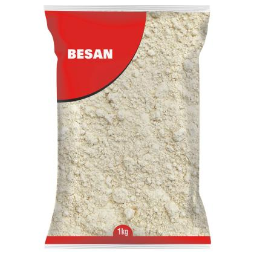
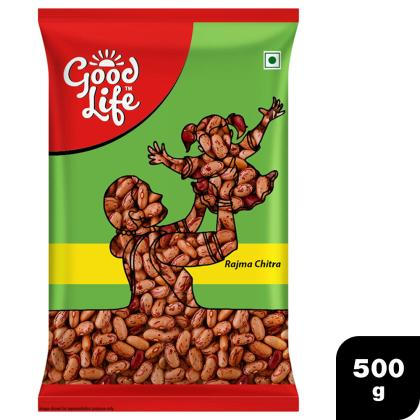
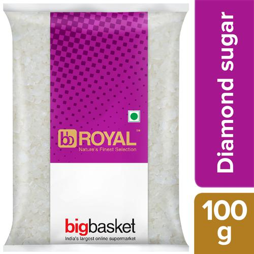
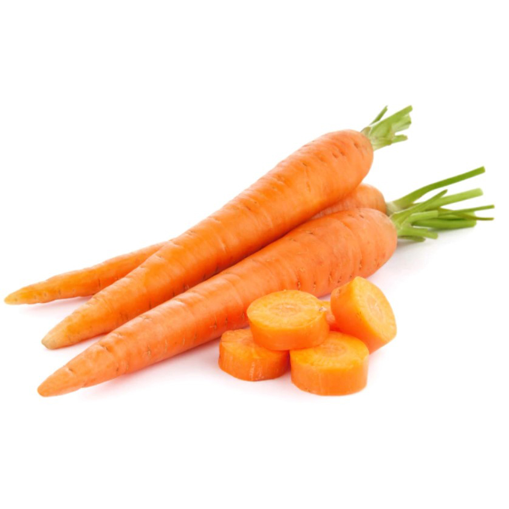
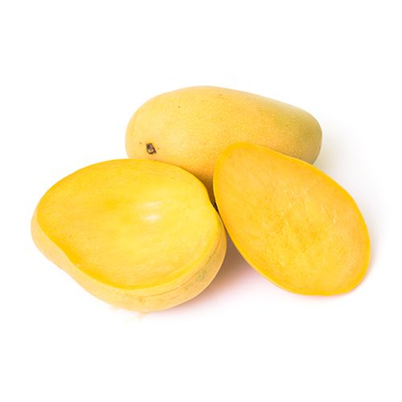
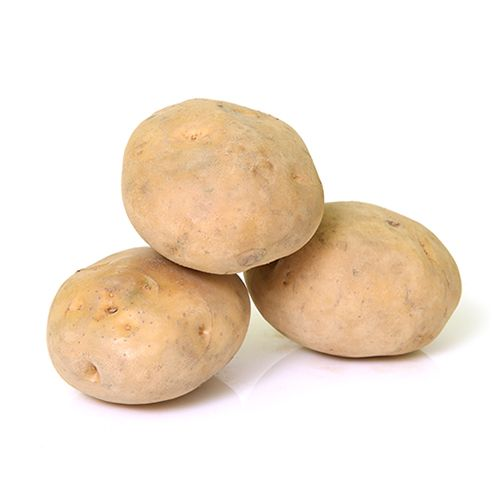

Aashirvaad Whole Wheat Aata | Grocery
Aashirvaad whole wheat atta is made of zero per cent maida and 100% atta, which makes it extremely nutritious since its packed with health benefits. This also means more fluffy and soft rotis at home. Aashirvaad Atta is also made from the best grains - heavy on the palm, golden amber in colour and hard in bite. It is grounded using the chakki - grinding process for the perfect balance of colour, taste and nutrition.
Seller : Jayesh Dal Wala
₹ 389
₹ 490
21% off

Besan | Grocery
Besan is one of the most commonly used ingredients in Indian kitchens. It is made by grinding Chickpea Flour and serves as an excellent source of important nutrients and fibers. Apart from adding an aromatic flavor to your food, besan goes a long way in adding health benefits to your lifestyle. Buy Besan online now!
Seller : Jayesh Dal Wala
₹ 74
₹ 160
53% off

Dailya Broken Wheat | Grocery
Broken Wheat / Daliya is loaded with essential Vitamins. Eat a bowl of daliya and increase your protein intake. Daliya also aids in weight loss as it contains high fibre content. It gives you a feeling of fullness and you do not indulge in overeating. Buy Broken Wheat / Daliya online now!
Seller : Jayesh Dal Wala
₹ 25
₹ 50
50% off

Kabuli Chana | Grocery
Good Life Kabuli Chana is rich in proteins, dietary fibre and low in cholesterol and saturated fat. These pulses can be soaked in water and cooked along with vegetables in preparation of a variety of curries that complement well with rice, roti, chapattis, puri, kulcha as well as bread. It can be sprouted after soaking in water for 24 hours and added to salads to enrich the latter with proteins. Buy Good Life Kabuli Chana online now!
Seller : Jayesh Dal Wala
₹ 66
₹ 83
20% off

Maida | Grocery
Maida is used for both desserts and savoury items. It is a self-rising flour and is suited for making cakes, pastries and other baking food items. Besides this, you can also use it for making paratha, puris and other forms of bread too. Buy Maida online now!
Seller : Jayesh Dal Wala
₹ 35
₹ 80
56% off
Moong Dal | Grocery
If you are someone who has been looking for a healthy food option without compromising the awesome taste of the daily food, then your search is over. Go and grab a pack of Good Life Moong Dal Chilka as they combine the benefit of flavourful eating and healthier living in one pack. Buy Good Life Moong Dal Chilka online now.
Seller : Jayesh Dal Wala
₹ 119
₹ 153
22% off

Rajma | Grocery
Good Life Rajma Chitra is definitely fit for a kingly meal. High on taste and packed with protein, red kidney beans are selected from the finest growers. It is then air packed in a way that it provides optimal freshness when opened. Buy Good Life Rajma Chitra online now!
Seller : Jayesh Dal Wala
₹ 90
₹ 100
10% off
Soya Chunks | Grocery
Fortune Soya Wadi / Chunks are a unique combination of 9 essential amino acids necessary for human growth. Light, soft and easy to digest. Does your family need champion wala dum aur yum? It has 15 times more protein than milk which gives strength. Fortune Soya Chunk - ''Yum jo de champion ko dum'' so Buy Fortune Soya Wadi / Chunks online now!
Seller : Jayesh Dal Wala
₹ 46.5
₹ 50
7% off
Suji Rawa | Grocery
Rawa, more popularly known as Sooji, is an important ingredient used in every Indian kitchen. Right from the delicious sooji ka halwa to a nutritious Upma, sooji can instantly take care of your hunger and save your day. Buy Rawa online now!
Seller : Jayesh Dal Wala
₹ 38
₹ 86
55% off
Urad Dal | Grocery
Good Life Urad Dal has immeasurable benefits. It has constituted an important part of Indian cuisine. It can fulfil the nutritional and dietary requirements of an entire meal. It has various positive impacts on one's health and body. Buy Good Life Urad Dal online now!
Seller : Jayesh Dal Wala
₹ 135
₹ 157
14% off
Tata Salt Iodized, 1 kg Pouch | Grocery
Tata and quality are synonymous in the world today. Tata Iodized Salt has been a staple in kitchens for generations now. This salt was first manufactured by Tata in a vacuum sealed pack, around the year 1983. Salt is one of the most important ingredients we use in food and cooking. It is a good method for food fortification and it also adds taste and flavour to any dish.
Seller : Jayesh Dal Wala
₹ 18
₹ 21
14% off
Everest Turmeric Powder/Arisina Pudi, 200 g Pouch | Grocery
Turmeric Powder is one along with those spices to be proved as a best result of Everest. The part of Turmeric powder is very much necessary to make our eating stuffs or dishes scented and colored. Turmeric has a soft, earthy and woody aroma. It stimulates protein digestion, and is a superb blood purifier. It is a accepted variety in India, where turmeric is used as a solution coloring agent in 'curries'.
Seller : Jayesh Dal Wala
₹ 62
₹ 60
3% off
Anandam Pooja Oil, 900 g | Grocery
This oil is a unique blend of 5 oils such as Sesame Oil, which mitigates evil, Coconut Oil helps in concentration and peace of mind, Mohua for Illupai - prosperity and Rice Bran Oil, which is the simplest offering to Goddess Annalakshmi. Use this oil in your prayer and pray for the harmonious health of your kith and kins. Also, it is easy to use.
Seller : Jayesh Dal Wala
₹ 160
₹ 200
20% off
BB Royal Organic - Cardamom Green/Elakki, 100 g | Grocery
Cardamom is a spice made from plants in the genera Elettaria and Amomum in the family Zingiberaceae. It gives a great aroma and adds flavours to dishes. It is widely used in the preparation of multiple cuisines in India. They are recognized by their small seed pods, triangular in cross-section and spindle-shaped, with a thin, papery outer shell and small black seeds. It is free from synthetic chemicals and pesticides.
Seller : Jayesh Dal Wala
₹ 349
₹ 599
42% off
BORGES Olive Oil - Extra Light 2 L Bottle + Durum Wheat Pasta Penne Rigate 500 g Pouch, Combo 2 Items | Grocery
Borges Olive Oil - Extra Light 2 L Bottle: Borges Extra Light Olive oil is handcrafted in Spain keeping in mind the Indian cooking methods. The olive oil is light in flavour & mild in the aroma which does not interfere with the original flavour of the dishes. Extra Light Olive oil has a high smoking point which makes it perfect for any kind of high heat cooking including frying. And being an olive oil of the highest quality, it has all the health benefits like 75% MUFA, natural anti-oxidants, phenols and Vitamins that help in all-round health of your body.
Seller : Jayesh Dal Wala
₹ 1263
₹ 2850
56% off
Barilla Pasta - Penne Rigate, Durum Wheat, 500 g Carton | Grocery
Barilla PENNE RIGATE is one of the most versatile pasta, known for its adaptability with recipes and occasions, from a traditional family lunch to or official dinner. Try Penne Rigate with easy tomato sauce, vegetables, with or without meat and enjoy an authentic Italian meal. Made with 100% high-quality durum wheat semolina. No maida. Create delicious pasta meals pairs well with just about any type of pasta sauce to make a vegetarian and authentic Italian meal for you and your family.
Seller : Jayesh Dal Wala
₹ 249
₹ 499
50% off
Grb Ghee/Tuppa, 200 ml Bottle | Grocery
GRB Ghee can be consumed for improved digestion and also good supply of energy and offers energy to human body. Ghee is very fit for our Body. It motivates muscle proceedings, strengthens the sense organ, nourishes the skin and recovers complexion.
Seller : Jayesh Dal Wala
₹ 132
₹ 142
8% off
Combo BB Popular Sugar 5 kg + BB Royal Honey 500 gm, Combo 2 Items | Grocery
Sugar is made from Sugarcane, the grains are light cream coloured. It is a healthier option as opposed to refined sugar that is pure white in color. It is a great source of energy and has essential minerals without harsh chemicals or additives. It is uniformly crystallized and blends well with all other food ingredients and makes your sweet dish more tastier.
Seller : Jayesh Dal Wala
₹ 347
₹ 474
27% off

BB Royal Misri - Diamond Sugar/Sakkare, 100 g | Grocery
Misri tables are known for their sweet taste and unique features. The product is natural, pure and chemical-free with no impurities. It is considered as healing sugar and contains the natural goodness of vitamins and minerals present in sugarcane extract which hygienically packed.
Seller : Jayesh Dal Wala
₹ 14
₹ 15
7% off
Fortune Sun Lite - Sunflower Refined Oil, 5 L Can | Grocery
Fortune Sunflower Oil is a light, healthy and nutritious cooking oil. Being rich in vitamins and consisting mainly of polyunsaturated fatty acids, it makes food easy to digest.It is manufactured through H.A.R.T. Process and is light and healthy that is easy to digest. It is rich in Vitamin E which keeps the skin healthy and good for the immune system.
Seller : Jayesh Dal Wala
₹ 869
₹ 1080
20% off
Harpic Original Disinfectant Toilet Cleaner Liquid, 2x500 ml Multipack | Cleaning & Household
Harpic All in One is the one-stop shop for all toilet cleaning needs. Unlike ordinary cleaners, it combines the benefits of Tough stain removal, 99.9% germ kill, and Freshness. The result is a sparkling clean, hygienic, fresh, and germ-free toilet without any malodour with every use of Harpic. 5x power action: 5 times better at limescale removal VS ordinary cleaners, Helps eliminate mal-odour, Clings to attack stains, Kills all germs.
Seller : Bhagwati Store
₹ 133
₹ 178
25% off
Lizol Disinfectant Floor Cleaner Liquid - Citrus, Kills 99.9% Germs, 3x975 ml Multipack | Cleaning & Household
Lizol is Indias No.1 Household Cleaning Brand which is highly recommended by the Indian Medical Association. Lizol guarantees to kill 99.99% of disease-causing bacteria as well as germs while leaving your room smelling fragrant with a wide variety of mesmerising aromas.
Seller : Bhagwati Store
₹ 415
₹ 564
26% off

Savlon Surface Disinfectant Spray, 2x170 g Multipack | Cleaning & Household
A wide variety of high traffic surfaces such as tables, door handles, chairs, carpets, curtains etc.are touched often by a number of different people and are a reservoir for a wide variety of germs and bacteria. Introducing, Savlon Surface Disinfectant Spray which will help keep you and your loved ones safe by killing a wide range of germs like bacteria, fungi and moulds. This versatile spray disinfects and deodorizes in one easy step.
Seller : Bhagwati Store
₹ 294
₹ 318
24% off
Vim Dishwash Bar - Lemon, 200 g (Pack of 3) | Cleaning & Household
Vim is the No.1 dishwashing brand in India. More than 7 out of 10 Urban Indian Households are regular Vim Dishwash Bar users. With the power of 100 lemons(power refers to the cleaning benefits of lemons), Vim dishwash bar easily removes the toughest of stains. It does wonder in cleaning even in small quantities and provides the fastest removal of burnt food(as per independent lab test conducted on burnt food stains), reducing the overall time and efforts required to clean the utensils.
Seller : Bhagwati Store
₹ 41
₹ 45
10% off
Surf Excel Matic Liquid Detergent - Top Load, 2x2 lt Multipack | Cleaning & Household
Presenting Surf Excel Matic Top Load Liquid Detergent - a revolutionary liquid detergent for Top Load washing machines. Being liquid, it is best suited for washing machines and ensures a superior laundry experience. Surf Excel Matic Top Load Liquid Detergent is specially made for your Top Load washing machine and gives you tough stain removal in machines.
Seller : Bhagwati Store
₹ 547
₹ 760
28% off
Surf Excel Matic Front Load Detergent Powder, 2 kg | Cleaning & Household
Presenting, Surf excel matic front load the machine specialist laundry detergent from the Surf excel matic family that gives you 100% Tough Stain Removal in Machines. Surf excel matic front load is specially designed to work in high water level environment (40 liters) of front load washing machines. Its hand rub action power penetrates clothes and removes tough stains in the washing machine itself .This means no more soaking or scrubbing and saves up the time and effort you put behind everyday laundry.
Seller : Bhagwati Store
₹ 331
₹ 530
38% off
Rin Detergent Bar, 250 g (Pack of 4) | Cleaning & Household
Presenting the new Rin Bar - with the promise of whiter and brighter clothes so that you can dress to progress! As you stride forward on your journey through life, Rin Bar gives you the confidence to shine, all day, every day. Rin Bar removes the dirt from the toughest places like cuff and colour with just one stroke. It also leaves your clothes with a pleasant fragrance to keep you feeling fresh all day long.
Seller : Bhagwati Store
₹ 58
₹ 64
9% off
HIT Cockroach Killer Spray, 700 ml | Cleaning & Household
Godrej Lal HIT is an effective cockroach killer spray that is enabled with a ‘Deep Reach Nozzle', which will help reach even the hidden cockroaches conveniently and eliminate them before they escape. Lal HIT eliminates any cockroach in just 3 seconds.
Seller : Bhagwati Store
₹ 266
₹ 340
22% off
Comfort After Wash Morning Fresh Fabric Conditioner, 860 ml | Cleaning & Household
A good fabric conditioner is an essential part of every household. ‘After Wash Morning Fresh Fabric Conditioner’ helps to keep your clothes fresh and scented. It helps to retain the shape of the cloth and also provide long life for your outfit. The product is known to provide proper care and keep your clothes smelling amazing.
Seller : Bhagwati Store
₹ 178
₹ 225
21% off
Dettol Liquid Laundry Sanitizer - After Detergent Wash, Fresh Linen, 960 ml | Cleaning & Household
Keeping your laundry clean and germ-free every day requires a lot of pain and effort but Dettol Laundry Sanitizer makes hygienically cleaning your clothes an easy task by removing germs. This clothes sanitiser eliminates bacteria that breed on synthetic fabrics and keep increasing from the excessive oil present in human skin. The clothes conditioner is gentle on clothes and freshens them with a delightful Spring Blossom fragrance.
Seller : Bhagwati Store
₹ 261
₹ 290
10% off
Ariel Detergent Washing Powder - Matic Front Load, 3 x 2 Kg Multipack | Cleaning & Household
Recommended by top washing machine brands like Whirpool, LG, Panasonic, and so on the new & Improved Ariel Matic gives you tough stain removal in just 1 wash. Specially designed to be used in front-loading machines, Ariel Matic Front Load offers brilliant stain removal for full loads. It also provides deep down cleaning and long-lasting freshness.
Seller : Bhagwati Store
₹ 1012
₹ 1590
36% off
Surf Excel Detergent Bar, 200 g Pack of 4 | Cleaning & Household
Surf excel detergent bar is Indias most premium detergent bar and is developed with a unique patented technology. Surf excel bar combines the power of 4 products - vinegar, blue, bleach and lemon into just 1 product, thereby helping you fight and remove tough stains easily that help you save time, money andÀšÃ‚ effort you put behind laundry. With just one product, Surf Excel Bar, you can easily remove tough stains like tea, coffee, turmeric, curry, ketchup and chocolate.
Seller : Bhagwati Store
₹ 85
₹ 98
13% off
Pril Dishwash Liquid - Lime, 750 ml Bottle | Cleaning & Household
Pril Lime Liquid Dishwash is the strongest liquid identified for dissolving high grease- power with the speedy dry formula. It is kind to the skin, non messy and doesn't leave any residue. It includes liquid line with an extensive array of fragrances. It cleans dishes further than the clearly clean dishes, which not just stares spotless but also stinks well along with anti bacterial properties which kill 99.99% germs.
Seller : Bhagwati Store
₹ 124
₹ 160
23% off
Good knight Power Activ+ - Mosquito Repellent Refill, 270 ml (Pack of 6) | Cleaning & Household
Goodknight Power Activ+ System is the most technologically Superior Liquid Vaporizer in India. The combo pack consists of a mosquito repellent liquid vaporizer & a plugin electronic machine. The machine comes with a dual-mode technology. The liquid refill contains 50% more Activ Molecules which makes it 50% more powerful. It ensures low electricity consumption & a consistent release of the Power Activ+.
Seller : Bhagwati Store
₹ 357
₹ 432
17% off
Scotch brite Sponge Wipe - Large, 3 pcs | Cleaning & Household
With Scotch-Brite kitchen wipe by your side say goodbye to messy kitchens & daily scrubbing! This miracle wipe made from 100% biodegradable*; soft cellulose absorbs 10X more. This means mess-free surfaces in a swipe – no drips, water trails or lint! Just wipe, rinse & relax. It’s the smartest, simplest way to a sparkling kitchen every day! Kitchen surfaces such as countertops, stovetop, tiles, appliances & dining table are areas that are most susceptible to spills and cleaning them up can be a nightmare.
Seller : Bhagwati Store
₹ 180
₹ 195
8% off
Origami So Soft 3 Ply Toilet Tissue, 10 + 2 Rolls | Cleaning & Household
Origami brings to you soft, absorbent and economic tissue rolls. This multipurpose product can be used for your home, office, party and travel needs. These tissues are made using virgin fibre to deliver superior quality and hygiene. Origami products come with an added advantage of being Eco-friendly and are made from regenerative forest resources or recyclable materials, thus also lessening the impact on the environment.
Seller : Bhagwati Store
₹ 332
₹ 390
15% off
Scotch brite Steel Scrubber Combo, 1 pc Steel and Scurb | Cleaning & Household
Steel Combi has one steel scrub, it comes with a free Scotch-Brite Scrub pad worth Rs.10. It is an ideal tool for daily cleaning needs and tough stains. Steel scrub made of higher grade steel. Doesn't rust and break. Scotch-Brite Scrub Pad worth Rs.10 free.
Seller : Bhagwati Store
₹ 32
₹ 35
9% off
BB Home Naphthalene Balls, 100 g Pouch | Cleaning & Household
It is needless to say how important Naphthalene Balls are, for our daily use. Basically, it has proven to be a quick and pragmatic solution to keep bad odour and insects away from entering cupboards, shelves etc. Moreover, these naphthalene balls are strong and have been very useful for maintaining the freshness of the clothes and also for keeping up the overall hygiene of any space.
Seller : Bhagwati Store
₹ 37
₹ 38
3% off
Odonil Toilet Air Freshener Mix (3+1), 50 g | Cleaning & Household
Odonil Blocks are all about convenience. Let the small spaces in your home get the attention they deserve with easy-to-use, nature-inspired fragrances.Available in a collection of 4 scents, Odonil Natural Block offers a perfect mix for those who have a hard time choosing. Convenient and long-lasting home freshener. Can be used in various small spaces (e.g. cupboards, shoe racks, kitchen sinks etc.)
Seller : Bhagwati Store
₹ 110
₹ 147
25% off
BB Home Toilet Cleaner - Original, 1 L | Cleaning & Household
BB Home Toilet Cleaner with 99.99% germ killer ingredient is the ideal product for your toilet cleaning solution. Packed with industry benchmarked solutions, BB Home Toilet Cleaner works on effectively on both western and Indian style toilet bowl in removing limescale and yellow stains giving your toilet bowl a sparkling look and pleasant odour with each usage.
Seller : Bhagwati Store
₹ 118
₹ 168
30% off

Apple (1 kg) | Fruits & Vegetables
The bright red coloured and heart shaped Red Delicious apples are crunchy, juicy and slightly sweet. Red Delicious Apples are a natural source of fibre and are fat free. They contain a wide variety of anti-oxidants and polynutrients.
Seller : Arjun
₹ 200
₹ 250
20% off

Banana (1 dozen) | Fruits & Vegetables
Relish the soft, buttery texture of Robusta bananas that are light green and have a great fragrance and taste. The stalks of Robustas are thick and rigid. Fresh fruits are green, which revolve to a bright yellow on ripening and the flesh contains a white - ceramic colour.
Seller : Arjun
₹ 22
₹ 40
46% off
Bitter Gourd (1 kg) | Fruits & Vegetables
Bitter Gourd is an important vegetable crop and is grown for its immature tuberculate fruits which have a unique bitter taste. Fresh fruits are green, which revolve to a bright yellow on ripening and the flesh contains a white - ceramic colour.
Seller : Arjun
₹ 56
₹ 70
20% off

Brinjal (1 kg) | Fruits & Vegetables
Deep purple and oval shaped bottle brinjals are glossy skinned vegetables with a white and have a soft flesh. Fresh fruits are green, which revolve to a bright yellow on ripening and the flesh contains a white - ceramic colour.
Seller : Arjun
₹ 36
₹ 82
56% off

Cabbage (1 piece) | Fruits & Vegetables
With a texture of crispness and juiciness the moment you take the first bite, cabbages are sweet and grassy flavoured with dense and smooth leafy layers. Fresh fruits are green, which revolve to a bright yellow on ripening and the flesh contains a white - ceramic colour.
Seller : Arjun
₹ 11
₹ 26
58% off

Capsicum (1 kg) | Fruits & Vegetables
Leaving a moderately pungent taste on the tongue, Green capsicums, also known as green peppers are bell shaped, medium-sized fruit pods.
Seller : Arjun
₹ 34
₹ 86
68% off

Carrot (1 kg) | Fruits & Vegetables
A popular sweet-tasting root vegetable, Carrots are narrow and cone shaped. They have thick, fleshy, deeply colored root, which grows underground, and feathery green leaves that emerge above the ground. While these greens are fresh tasting and slightly bitter, the carrot roots are crunchy textured with a sweet and minty aromatic taste.
Seller : Arjun
₹ 100
₹ 120
17% off
Cauliflower (1 piece) | Fruits & Vegetables
Cauliflower is made up of tightly bound clusters of soft, crumbly, sweet cauliflower florets that form a dense head.
Seller : Arjun
₹ 40
₹ 54
30% off
Grapes (1 kg) | Fruits & Vegetables
Fresho Thompson seedless grapes are superior quality, best picked grapes, which taste delicious when the colour turns to a light golden from pale green. Don't be discouraged if the grapes shake off their stems as their clusters are not firm in nature. They have a crunchy bite and a tone of sweet-tart flavour.
Seller : Arjun
₹ 160
₹ 200
20% off
Guava (1 kg) | Fruits & Vegetables
Savour the green guavas along with hard, pale yellow edible seeds. The off-white flesh is crunchy and mildly sweet with very good fragrance.
Seller : Arjun
₹ 65
₹ 82
20% off
Ladies Finger (1 kg) | Fruits & Vegetables
Ladies finger is a green vegetable with a tip at the end and a lighter green head, which is inedibe and to be thrown away.
Seller : Arjun
₹ 56
₹ 80
28% off

Mango (1 kg) | Fruits & Vegetables
Mangoes are well-known for their unique sweet and rich taste. They are moderately juicy and aromatic with a maize-yellow colour.
Seller : Arjun
₹ 59
₹ 74
20% off

Onion (1 kg) | Fruits & Vegetables
Onion is a vegetable which is almost like a staple in Indian food. This is also known to be one of the essential ingredients of raw salads. They come in different colours like white, red or yellow and are quite in demand in cold salads and hot soups. You can dice, slice or cut it in rings and put it in burgers.
Seller : Arjun
₹ 31
₹ 44
28% off
Orange (1 kg) | Fruits & Vegetables
Oranges are very sugary and juicy and considered to be the world's finest orange for fresh consumption because they are very sweet, naturally juice, seedless and peels and segments very easily. It has a variety of phytochemicals containing flavanoids hesperetin, beta-carotene and carotenoids alpha etc. It is wealthy in Vitamin C, A and Folate and includes small amounts of Vitamin E & B complex vitamins too.
Seller : Arjun
₹ 120
₹ 150
20% off
Pear (1 kg) | Fruits & Vegetables
Pears are grown throughout the world, but none matches the ideal growing conditions and climate of the Pacific Northwest states of USA “ Washington & Oregon. USA Pears are recognized worldwide for their unsurpassed quality. They are good any time of the day“ from mid-morning to pre bed time, easy to digest with only 100 calories.
Seller : Arjun
₹ 171
₹ 215
20% off

Pineapple (1 piece) | Fruits & Vegetables
With the shape of a pine cone, the fruit is loosely fibrous and juicy with white to yellowish flesh. The edible center part is firm, leathery and sweeter. We selectively pick organically grown pineapples from the best farms.
Seller : Arjun
₹ 38
₹ 47
20% off
Pomegranate (4 piece) | Fruits & Vegetables
With ruby color and an intense floral, sweet-tart flavor, the pomegranate delivers both taste and beauty. You can remove the skin and the membranes to get at the delicious fruit with nutty seeds.
Seller : Arjun
₹ 144
₹ 186
23% off

Potato (1 kg) | Fruits & Vegetables
Fresho Potatoes are nutrient-dense, non-fattening and have reasonable amount of calories. Include them in your regular meals so that the body receives a good supply of carbohydrates, dietary fibers and essential minerals such as copper, magnesium, and iron. In India, potatoes are probably the second-most consumed vegetables after onions.
Seller : Arjun
₹ 23
₹ 31
26% off
Tomato (1 kg) | Fruits & Vegetables
Tomato Hybrids are high-quality fruits compared to desi, local tomatoes. They contain numerous edible seeds and are red in colour due to lycopene, an anti-oxidant.
Seller : Arjun
₹ 8
₹ 16
50% off

Watermelon (1 piece) | Fruits & Vegetables
With greenish black to smooth dark green surface, Fresho watermelons are globular in shape and are freshly picked for you directly from our farmers. The juicy, sweet and grainy textured flesh is filled with 12-14% of sugar content, making it a healthy alternative to sugary carbonated drinks. Flesh colour of these watermelons are pink to red with dark brown/black seeds.
Seller : Arjun
₹ 32
₹ 41
20% off